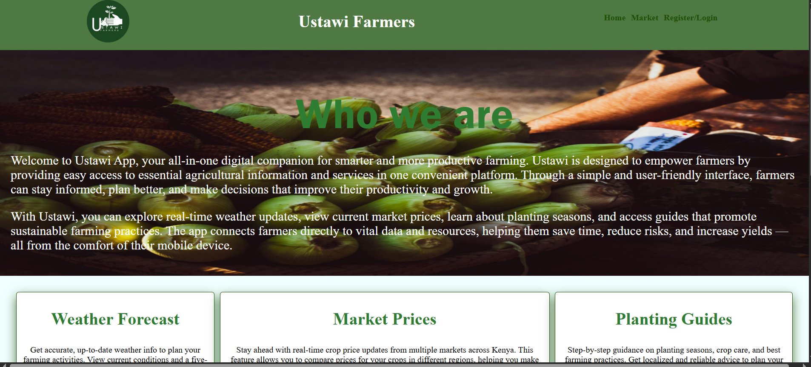

🎯
Ongoing • 2024-2025
Workshops & Tech Events
Documenting my experiences attending various workshops, networking events, and tech conferences. Learning from industry experts and connecting with fellow developers.
SOFTWARE ENGINEER | WEB DESIGNER
📧 atienovelma1@gmail.com
🤙 +254 112 800 041
I am a software engineer with a strong interest in frontend development and user-centered design. I enjoy building digital experiences that are intuitive, visually clear, and functional, with a focus on creating solutions that are easy for users to understand and interact with. My technical background includes frontend technologies such as HTML, CSS, JavaScript, and React, supported by a solid understanding of version control, responsive design, and accessibility principles. I also have experience working with UI/UX tools like Figma, wireframing, and prototyping, which allows me to translate ideas into structured, user-focused interfaces. Beyond technical skills, I bring a creative and thoughtful approach to problem-solving. My background in graphic design and illustration strengthens my attention to detail, visual communication, and design thinking. This blend of creativity and engineering enables me to approach projects holistically—considering both how a solution works and how it feels to the end user. I value continuous learning and adaptability, and I actively seek opportunities to improve my skills through hands-on projects, collaboration, and exploration of emerging technologies. I am reflective, open to feedback, and motivated by growth, both personally and professionally. Overall, I am driven by curiosity, creativity, and a commitment to building meaningful digital experiences that balance technical excellence with thoughtful design.

An agricultural advisory platform designed to help farmers make informed decisions. Provides crop recommendations, weather updates, and farming best practices.
Building responsive, user-friendly websites and web applications using modern technologies like HTML, CSS, JavaScript, PHP, and more.
Ongoing • 2024-2025
Documenting my experiences attending various workshops, networking events, and tech conferences. Learning from industry experts and connecting with fellow developers.
2024-2025
My journey learning modern web frameworks and technologies. From mastering the basics to building real-world projects, sharing insights and challenges along the way.
2024-Present
From student to professional - documenting my preparation for industrial attachment, building my portfolio, and growing as a software engineer and designer.
Throughout Studies
Lessons learned from working on group projects, collaborating with peers, and developing both technical and soft skills through teamwork.
Ongoing
How being a graphic designer and pencil artist enhances my approach to software engineering. Exploring the intersection of creativity and code.
Continuous
Taking online courses, earning certifications, and building self-learning projects. Staying curious and continuously improving my skills.
I'm always open to discussing new projects, creative ideas, internship opportunities, or design collaborations. Let's connect!
📧 atienovelma1@gmail.com